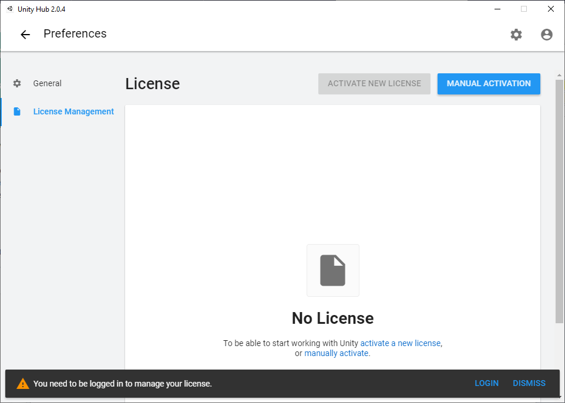
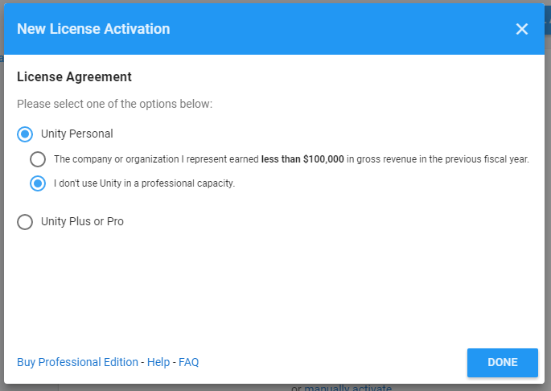
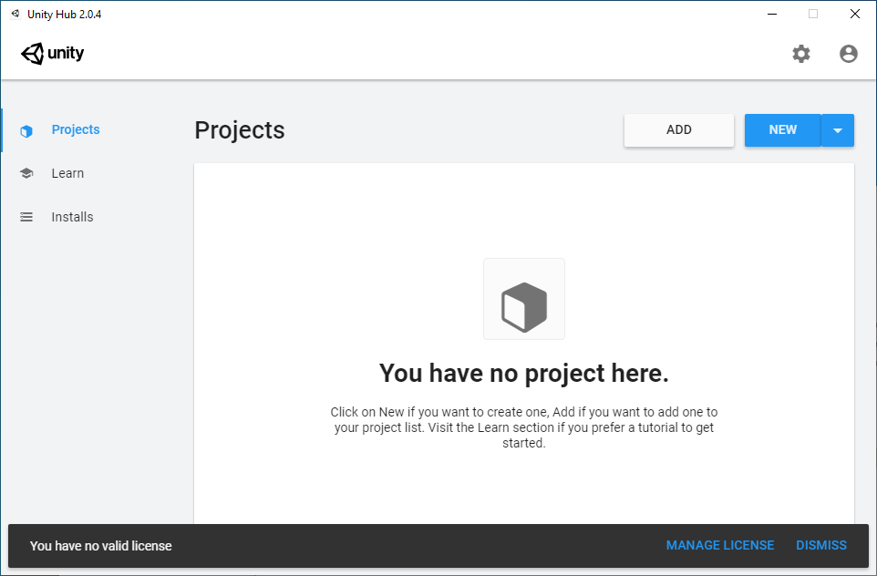
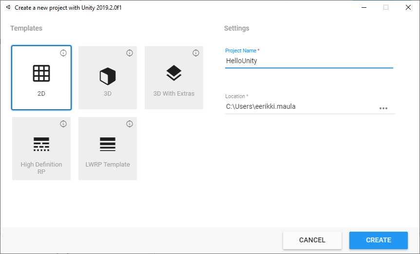
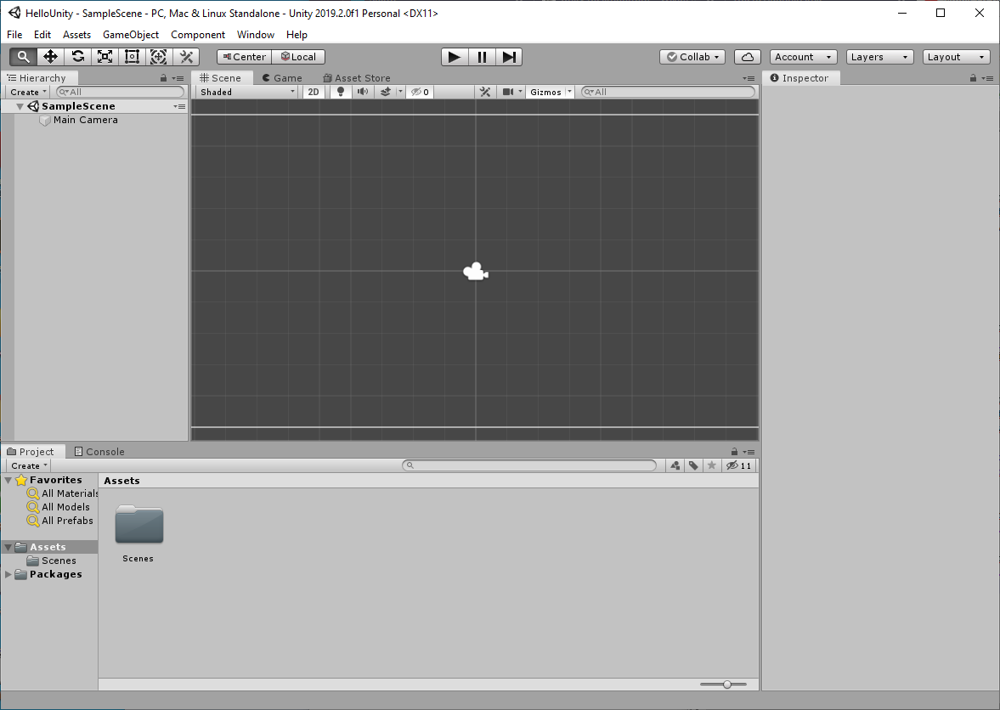

Mikä on Unity?
Yleistä
- Pelimoottori (engine) pelien ohjelmointiin. Mahdollistaa 2D ja 3D -pelien toteutuksen.
- Käytettävissä monilla eri käyttöjärjestelmillä (Windows, macOS, Linux)
- Unity-ympäristön käyttäminen on maksullista kaupallisessa käytössä, henkilökohtaisessa ja opetuskäytössä sovellusta saa käyttää vapaasti. Myös pelin valmiita osia (Asset) myydään kehittäjille.
- Ohjelmointi skriptausta, opitaan matkan varrella. Kielinä JavaScript ja C#. C# muistuttaa hyvin paljon Javaa, ei pitäisi tuottaa suurempia ongelmia.
- Koodauksessa voi käyttää mitä tahansa editoria, koululla käytössä luokissa Visual Studio 2019.
Unityn edut:
- Tukee monia eri alustoja
- Kehitysympäristön käyttö on helppoa
- Dokumentaatio kattava
Ongelmia:
- Hinnoittelu voi olla ongelmallinen yrityksille
- Ympäristö ei ole avoin
- Saattaa viedä muistia runsaasti
Linkkejä
- unity.com, virallinen sivusto
- docs.unity3d.com/Manual, virallinen dokumentaatio
- Wikipedia: List_of_Unity_games
- Peliyritykset Suomessa (neogames)
Käynnistäminen
- Käynnistä Unity työpöydältä tai Windows-valikosta
- Aluksi meidän täytyy aktivoida opiskelijalisenssi (Settings / License Management)

Kirjaudu olemassa olevalla lisenssilläsi tai luo uusi netissä.
Uusi tunnus:
- Kannattaa käyttää edu-sähköpostia (saa toki käyttää muutakin)
- Salasanassa tulee olla vähintään yksi iso kirjain ja yksi numero
- Käy Outlook-sähköpostissasi vahvistamassa sähköpostiosoite rekisteröitymisen jälkeen.
Valitse Activate New License, Unity Personal ja "I don't use Unity in a professional capacity".

- Palaa takaisin aloitusvalikkooon ja luodaan uusi projekti.

- Valitse New, annetaan projektille nimi (HelloUnity) ja valitaan tyypiksi 2D. Sijainti voi olla C-asemalla tai muistitikullasi.

Ympäristö

- Scene
- Inspector-ikkuna oikealla
- Hierarchy-ikkuna vasemmalla
- Assets